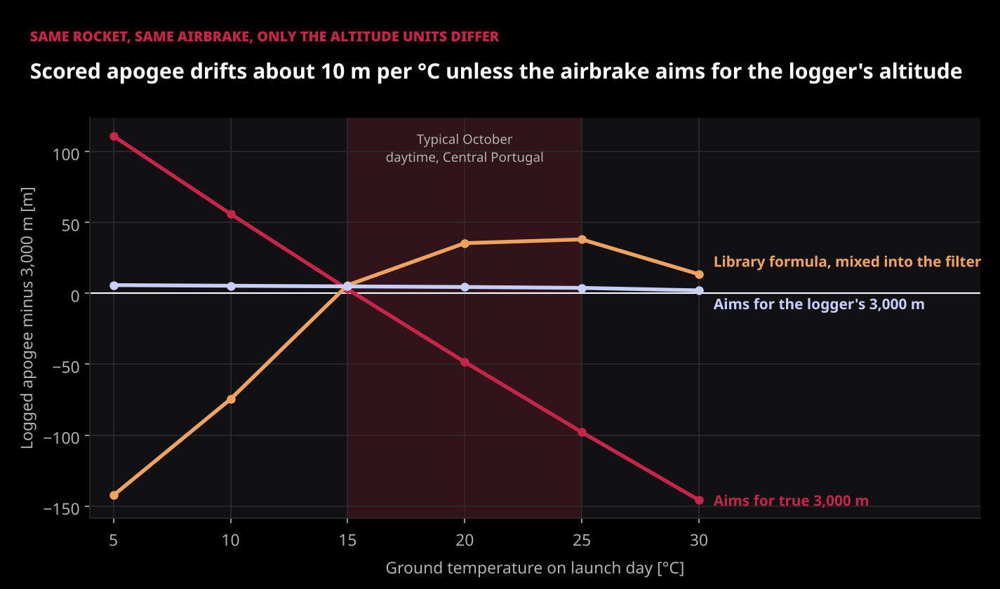

Independent study for BME Suborbitals
Hitting 3,000 m on the altitude the judges actually measure
A complete airbrake guidance chain for a EuRoC 3 km rocket, built from scratch: flight simulation, sensor fusion, apogee prediction, in-flight drag learning and wind. It ends with a finding about the official CATS Vega logger, which assumes a 15 °C day.
Official logger bias
≈10 m/°C
a true 3,000 m logs as 2,897 m at 25 °C
Scored miss, 1σ
55 → 15 m
aiming for logger altitude instead of true
Within ±25 m
22 → 91%
139 simulated EuRoC launch days
Live demoFly the rocket, change wind and temperature, replay the flight, run a Monte Carlo or a launch day check.Open console
Technical noteThe official logger's 15 °C assumption, its effect on an Eclipse-like rocket, and a software fix.Read the note
Code and dataPython simulator, Kalman filter, controllers, Monte Carlo scripts, results and figures.View on GitHub

How it was built
- 1-D flight simulator with RK4, standard atmosphere and Mach-dependent drag
- Airbrake model: authority and timing
- Barometer and accelerometer errors, Kalman filter with transonic lockout
- Apogee predictor and closed-loop flap controller
- 1,000-flight Monte Carlo and sensitivity ranking
- In-flight learning of body and flap drag
- 2-D flight with wind and rail angle, tilt-aware computer
- Eclipse-like model and the EuRoC official logger analysis